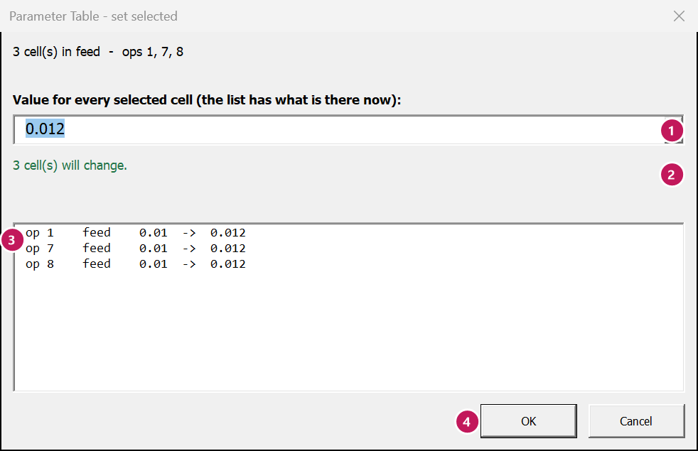

Set
Ribbon: Parameter Table tab › Edit cells › Set
What this is for
Puts one value into every cell you selected. Before anything is written, the window tells you how many cells will change and which ones are refused (read-only, not for that kind of op, or outside its limits).
When to use it
- The same feed, depth or stock to leave on many ops.
- The same choice on many ops:
per rev,CSS, a yes/no switch.
For coolant, use Coolant (Set on coolant cells opens it for you). For a percent up or down, use Scale %.
Steps
- Select the cells on the Lathe params sheet. To pick cells that are not next to each other, hold Ctrl while you click. To pick a whole column of ops, click the first cell, hold Shift, click the last.
- Click Set on the ribbon.
- Type the value (or pick it from the list). The list shows what is in the cells now, or the cell's own choices.
- Read the line under it: how many cells will change, how many already have that value, how many are refused. The list below shows each cell, old → new.
- Click OK. The cells turn yellow. The status bar (bottom of Excel) says what was done.


Hidden rows are skipped. Use This tool's ops or Changed ops first, then select the whole column – only the rows you can see are set.
Worked example
Set the feed of ops 1, 7 and 8 to 0.012 per rev.
- Click op 1's
feedcell. Hold Ctrl and click op 7's and op 8's. - Click Set, type
0.012. - The window says
3 cell(s) will change.
Click OK.
| Op | feed before | feed after |
|---|---|---|
| 1 Face Stock | 0.01 | 0.012 |
| 7 Rough Bore ID | 0.01 | 0.012 |
| 8 Finish Bore ID | 0.01 | 0.012 |
Changed your mind? Press Ctrl+Z (or Undo) – all three go back at once.